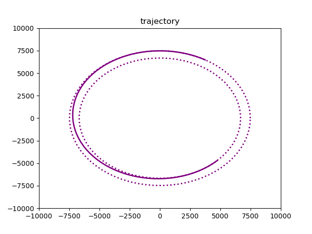
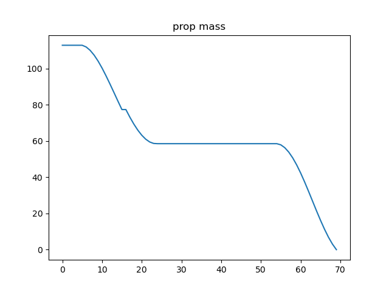
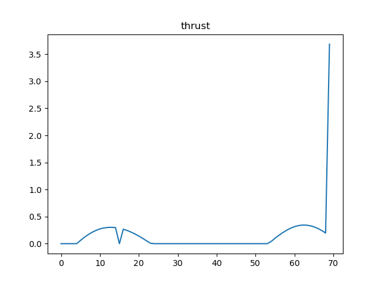
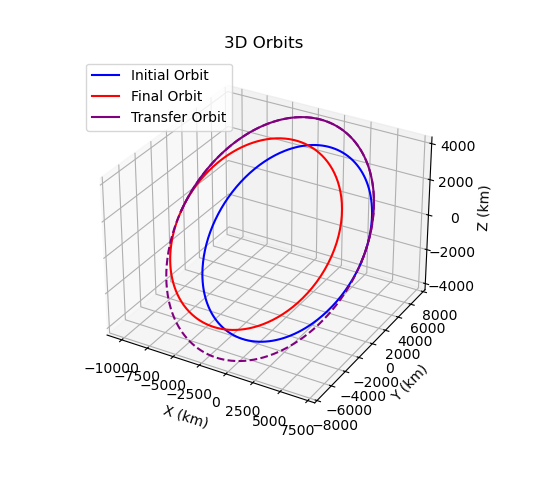

PROJECT FOCUS
I developed a computational framework for optimizing low-thrust orbital transfers using continuous control and direct transcription methods. The project investigates how discretization strategy influences solver convergence, trajectory structure, and propellant efficiency — a central challenge in modern astrodynamics.
Rather than treating timestep length as fixed, I introduced it as a design variable within the optimization. This allowed the solver to allocate resolution where the dynamics are most sensitive, dramatically improving convergence for high-eccentricity transfers.
To illustrate these methods, the example mission shown in the figure is a continuous-thrust transfer from a 1100 km orbit to a 300 km orbit, demonstrating multi-revolution descent and efficient orbital energy reduction. Subsequent plots of spacecraft mass and thrust in this page are drawn from this same illustrative mission profile.

1100 km
300 km
1000 kg
400 s
112 kg
Minimize Fuel
MODELING & OPTIMIZATION STRATEGY
- Formulated planar spacecraft dynamics with coupled radial and tangential thrust control.
- Implemented a direct optimization architecture using IPOPT to solve the nonlinear program.
- Added timestep duration as a decision variable to improve numerical conditioning.
- Applied nondimensionalization to stabilize gradients and reduce solver sensitivity.
- Framework implemented in Python using csdl_alpha and modopt, with PyKEP providing Lambert solutions for initial guesses.
- Designed to remain extensible for higher-fidelity force models and alternative transcription strategies.

Spacecraft mass depletion throughout the transfer, with the optimized solution requiring only 112 kg of propellant.
WHAT CHANGED THE SOLUTION
Allowing radial thrust revealed trajectory behaviors that fixed-structure formulations often suppress. During orbital energy reduction, the optimizer naturally leveraged radial acceleration to reshape the orbit more efficiently — lowering propellant consumption while maintaining feasible thrust levels.
More importantly, the variable-timestep formulation transformed the numerical landscape of the problem. Transfers that previously struggled to converge became stable, highlighting how transcription choices often dominate solver performance in trajectory optimization.

Optimal thrust magnitude and steering history.
SCALING TO THREE DIMENSIONS
Current development focuses on transitioning the formulation from planar motion to fully three-dimensional Cartesian dynamics. The added control authority increases state coupling and numerical stiffness, requiring careful scaling and constraint management.
I am also evaluating alternative transcription strategies — including collocation-based methods — to better understand the trade space between solution accuracy and computational cost.

Three-dimensional extension of the optimization framework.
LESSONS FROM BUILDING THE FRAMEWORK
- Discretization fundamentally shapes the solution space in optimal control problems.
- Well-scaled formulations outperform sophisticated solvers applied to poorly conditioned systems.
- Additional control freedom can simplify trajectories when paired with strong constraints.
- Optimization success depends as much on modeling judgment as on mathematics.
- Building extensible tools enables rapid experimentation with higher-fidelity dynamics.